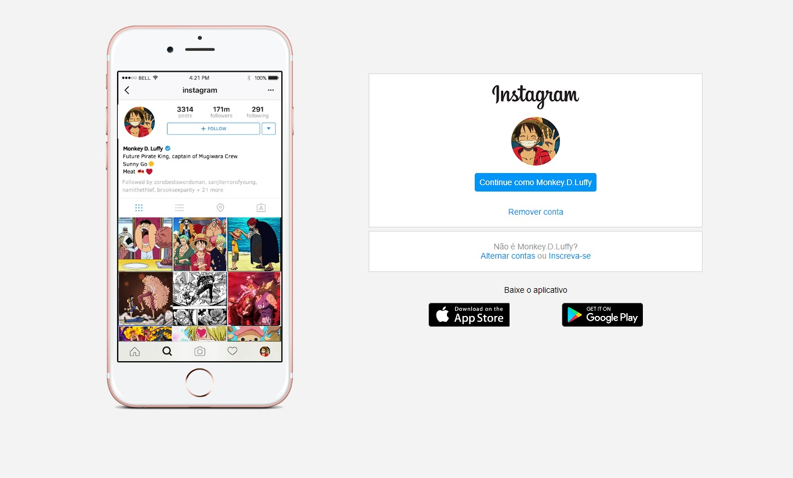

Este foi o meu primeiro projeto de site, é um pouco sujo e falta alguns elementos responsivos, mas serviu de base pra tudo que aprendi depois, ele foi feito durante a Mapa Dev Week de abril de 2022.
Você pode acessá-lo por esse Link, ou se preferir, ele está no meu GitHub, juntamente com outros projetos.

Já este é um site com mais responsividade e com um código um pouco mais limpo
Você pode acessá-lo por esse Link, ou se preferir, ele está no meu GitHub, juntamente com outros projetos.

Aqui foi um projeto feito durante o curso da Dio.me para reproduzirmos a página de login do Instagram, foi um desafio divertido e o resultado me agradou bastante
Você pode acessá-lo por esse Link, ou se preferir, ele está no meu GitHub, juntamente com outros projetos.
